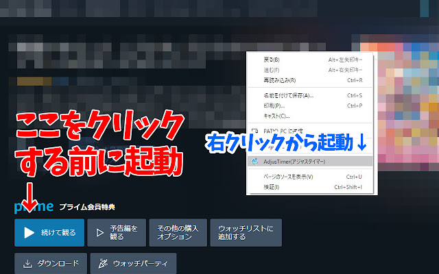
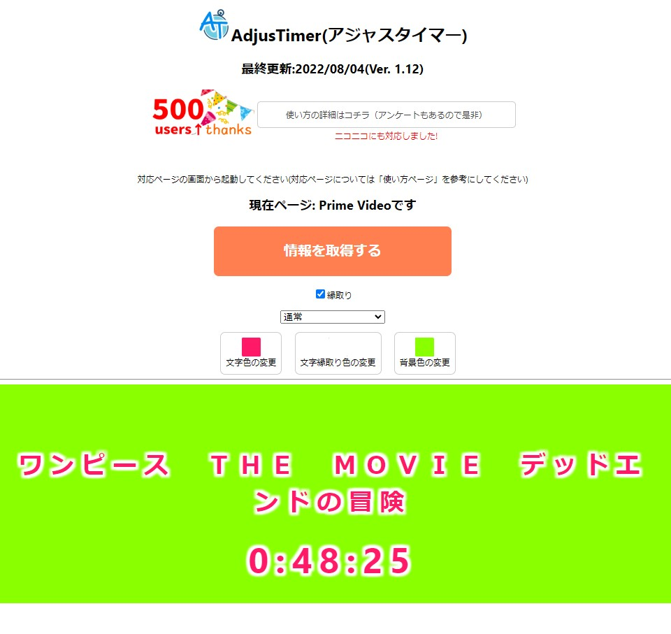

概要
AdjusTimer
各種動画サイトの現在視聴時間を別ウィンドウで表示することのできる拡張
- タイトル取得
- 現在時間取得
※現在対応済みサイト
- Amazon Prime Video(ウォッチパーティを含む）
- Tver
- Youtube
- dアニメストア
- Netflix
- Twitch(ウォッチパーティ)
- ニコニコ動画
※twitchのウォッチパーティは動画が開始されてから起動してください。
各種動画サイトの現在視聴時間を別ウィンドウで表示することのできる拡張
※twitchのウォッチパーティは動画が開始されてから起動してください。
例えば、対象がAmazon Prime Videoの場合、「今すぐに観る」「続きから観る」などのボタンのあるページに移動してください。
Youtubeなら動画(/watch?v=xxxxx)、Tverなら(/corner/xxxxxx)、Netflixなら(/watch/xxxxx)のページです。
右クリックから「AdjusTimer(アジャスタイマー)」の項目を選択する(例:Amazon Prime Video)

タイトルが取得できた時点で、再生ボタンを押すと再生時間が同期されるようになっています。
ボタンがオレンジ色にならない、押しても情報が反映されない場合は、
一度AdjusTimerを閉じ、ページの更新（F5など）をかけてから再度右クリックからAdjusTimerを起動しなおしてみてください。

詳細な原因はわかりませんが、(OBSのブラウザキャプチャによる仕様？）OBSでキャプチャ配信する際に
AdjusTimerと動画を再生しているブラウザを被せる形で配信すると、
再現できたことがあるため、できるだけAdjusTimerは独立した形で画面に配置するとこれが解消されます。
もし配信画面にタイマーの時間が反映されないなどありましたら、一度AdjusTimerの位置を移動させてみてください。
広告終了後などで、表示されている時間と再生時間に誤差がもし出た場合は、
再度「情報を取得する」ボタンを押してください。それでも直らない場合はお手数ですがAdjusTimerを一度落として再度起動してください。